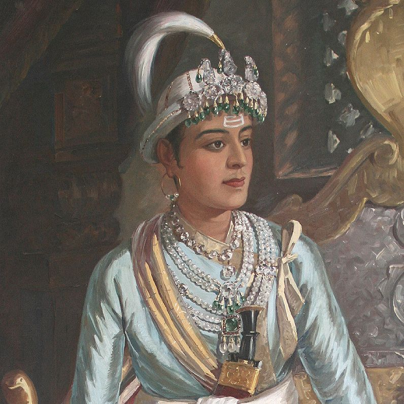

Girvan Yuddha Bikram Shah Dev
Biography:
Girvan Yuddha Bikram Shah Dev was born on October 19, 1797 in Basantapur, Nepal.
He was the son of Rana Bahadur Shah Dev and Kantavati Devi. He was the fourth King of Kingdom of Nepal
from 8 March, 1799 to 20 November, 1816. He died at the age of 19 on 20 November, 1816 in Basantapur, Nepal.